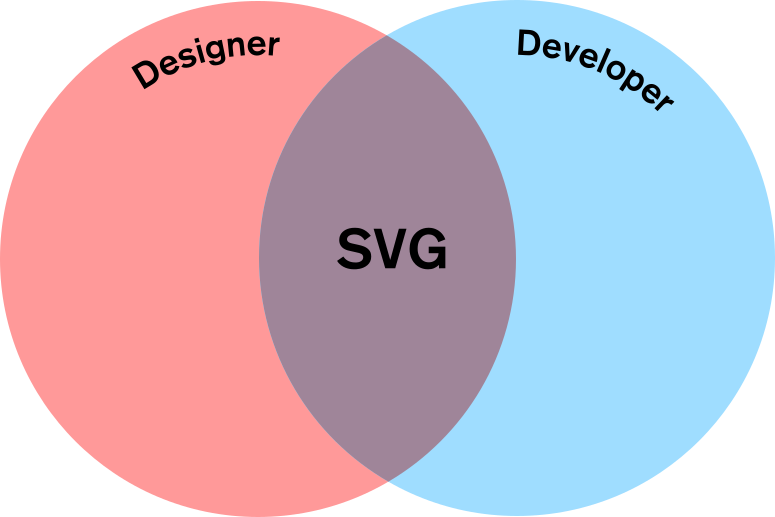

What is SVG
- Scalable Vector Graphics
- Initial release 2001
- Supported by all modern browsers
- XML-based
- Vector vs raster
- size=complexity, not dimension
The Basics
How to use
-
Img tag: clean code and contextual
>img src="graph.svg" alt="Graph showing relevant data" />
-
CSS: clean and fits layout styling
header {
background-image: url(header.svg);
}
-
Inline: Messy, but powerful
Use case: icons
- images: heavy (comparatively)
- icon-fonts: easy to manipulate, usually monochromatic (but doesn't have to be)
- svg: animated (sprites)
Super Power #1: Animations
- Powerful to convey meaning
- guide users
- retain context
- cuts down on perceived wait time
- animation enabling microinteraction
- animation showing the path of the process
- clarifying/explanatory animation
- decorative animation
Super Power #2: Interactions
- *Nearly as powerful as HTML
- ForeignObject
Super Power #3: Filters
- 17 different filters
- CSS Filters are just a subset
- Can be applied on HTML!
https://www.paulirish.com/work/videooo.xhtml
https://themaninblue.com/experiment/Blobular/
http://svg-whiz.com/svg/linguistics/theCreepyMouth.svg
https://www.bogotobogo.com/svg_source/SVGDigitalClock.svg
https://codepen.io/ainalem/pen/NWxYBRq
But Editing is still hard
- Illustrator is too rich
- Writing code manually is taxing
Libraries to help
